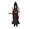

Battle mage

| Config name | zamorak_mage |
| NPC id | 912 |
| Combat level | 54 |
| Hitpoints | 120 |
| Respawn | 300 ticks |
| Options | Attack |
| Category | battle_mage |
| Aggression | battle_mage_hunt |
| Wander range | 5 tiles from spawn |
| Max range | 10 tiles from spawn |
| Area folder | area_mage_arena |
| Defined in | scripts/areas/area_mage_arena/configs/mage_arena.npc |
Battle mage
He kills in the name of Zamorak.
Show all 3 spawns on the world map → Open in knowledge graph →
Drops
No drops recorded.
Locations
| Area | Coordinates | Level | Count | Map |
|---|---|---|---|---|
| Mage Arena | 3100, 3927 | 0 | 1 | view |
| Mage Arena | 3102, 3938 | 0 | 1 | view |
| Mage Arena | 3116, 3934 | 0 | 1 | view |
Related NPCs (category battle_mage)
Referenced in scripts
scripts/areas/area_mage_arena/scripts/battle_mage.rs2